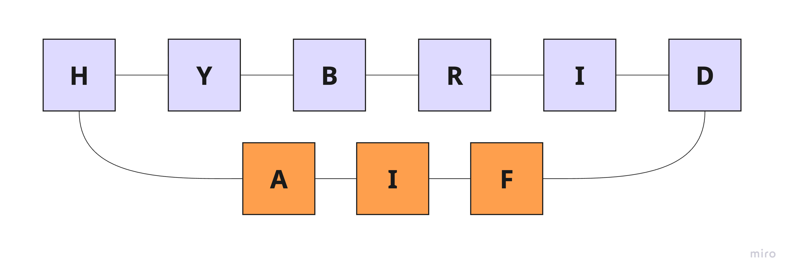

v0.19.0Loading replay data…
{{caption}}
| Component | Kind | entries | nats | Size (log scale) | Status |
|---|
uv venv && uv pip install -e ".[dev]"
.venv/bin/python -m pytest # the full suite, about twelve minutessystem = System(
A_deps=((0,), (1,)), # cell_obs reads visit, gauge reads energy
B_deps=((0, 3), (1, 0, 3), (0,), ()), # the option moves visit and energy
controls=(3,),
action_names=("option",),
factor_names=("visit", "energy", "map", "u_option"),
modality_names=("cell_obs", "gauge"),
policy_len=2,
planner="enumeration",
mixture_k=3,
mixture_schedule="mode_aligned",
planning_belief="prior",
epistemic=("transition:map",), # the novelty of the map's table
terms=(),
readings=(("map", "u_option"),), # pooled readings, one count per option level
)
params = SystemParams(
parameters={"field": ConditionalDirichlet.from_table(uniform, 1, strength=field_strength)},
transition={"visit": ..., "energy": ..., "map": Parameter("field")}, # the shared table
readings={"map": READINGS}, # 12 for each survey sector, 1 for charge
...
)cs, cp = merge(
{"mission": ms, "rover": rs},
{"mission": mp, "rover": rp},
[
Link("mission.option", "rover.u_opt"),
Identify("rover.field", "mission.field"),
],
)
mview, mparams = subsystem(cs, cp, "mission")import jax.numpy as jnp
import numpy as np
import survey_model as sm
import survey_scheduler as ss
from hybrid_aif.objectives import total
grid, centres = sm.field_grid() # the rover's 16 x 16 grid and its cell centres
scheduler, params = ss.scheduler(grid, centres, readings=True) # pooled: 12 per survey, 1 charge
faces = scheduler.compiled()
reading = {"cell_obs": jnp.asarray(35), "gauge": jnp.asarray(3)} # in cell 35, band "full"
beliefs, _ = faces.infer_states(params, reading)
q_pi, tree = faces.infer_policies(params, beliefs) # enumerates the 2-step option sequences
G = total(tree).lower # signed sum of the terms, per sequence
novelty = tree["infogain"]["transition:map"].lower # nats about the field, pooled
risk = tree["risk"]["energy"].lower # energy risk, nats
first = np.asarray(scheduler.policies(params))[:, 0, 0] # each sequence's first option
for k, name in enumerate(ss.OPTION_NAMES):
# the best sequence that starts with option k
i = min(np.flatnonzero(first == k), key=lambda i: float(G[i]))
print(f"{name:16s} novelty {float(novelty[i]):6.2f} risk {float(risk[i]):5.2f} G {float(G[i]):7.2f}")
# survey sector 1 novelty 23.97 risk 0.32 G -23.65
# survey sector 2 novelty 23.97 risk 1.74 G -22.23
# survey sector 3 novelty 23.97 risk 2.17 G -21.80
# survey sector 4 novelty 23.97 risk 3.33 G -20.64
# charge novelty 12.98 risk 0.58 G -12.40@software{hybrid_aif_2026,
title = {hybrid-aif: hybrid continuous-discrete active inference in {JAX}},
author = {Kiefer, Alex and {Noumenal Labs}},
year = {2026},
version = {0.19.0},
url = {https://github.com/noumenal-labs/hybrid-aif},
license = {MIT}
}